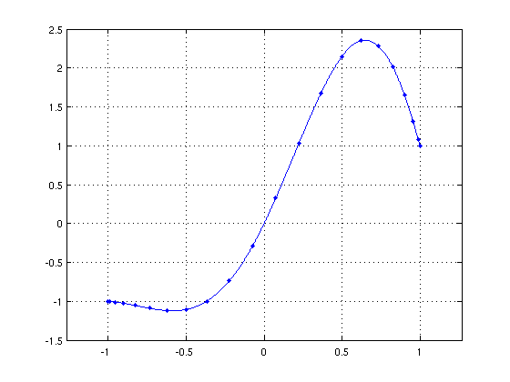
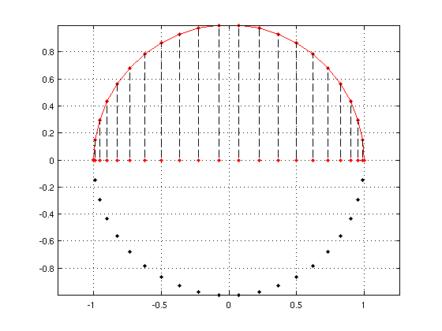

The FFT in Chebfun
Mark Richardson, 9th May 2011
(Chebfun example approx/ChebfunFFT.m)
One of the most frequently used computations in Chebfun is the one-to-one operation of converting function values at Chebyshev points to Chebyshev expansion coefficients. This operation is achieved by the CHEBPOLY command. The inverse operation of mapping Chebyshev coefficients to function values is computed with CHEBPOLYVAL. In each case, the FFT (or IFFT) is used. Thus, the conversion process is very fast, with O(nlogn) complexity.
This transformation is so fundamental to Chebfun that it is useful to understand where it comes from. In order to do so, we consider an example computation.
Suppose that we have some function values at Chebyshev points, and we wish to compute the corresponding coeffcients of the truncated Chebyshev series. Let's pick a sample Chebfun to work with.
fc = chebfun('exp(x).*sin(pi*x) + x'); n = length(fc) - 1;
Chebfuns are defined by the values taken at Chebyshev points. We can access this data by looking in the 'vals' field.
fvals = fc.vals;
We can plot the chebfun and its values at Chebsyhev points with the following code, noting that this is equivalent to the command PLOT(FC,'.-').
LW = 'linewidth'; FS = 'fontsize'; MS = 'markersize'; ms = 14; lw = 0.7; plot(fc), hold on cpts = chebpts(n+1); plot(cpts,fvals,'.',MS,ms) grid on, hold off, xlim(1.26789*[-1 1])
The kth Chebyshev polynomial on the unit interval can be viewed as the real part of the monomial z^k on the unit disc in the complex plane, z^k = Re(z^(k)) = 1/2(z^(k) + z^(-k)). Thus, a sum of n+1 Chebyshev polynomials is equivalent to a truncated Laurent series in the variable z, with equal coefficients for the z^(k) and z^(-k) terms.
In a similar way, the Chebyshev points on [-1,1] can be interpreted as the real parts of equispaced nodes on the unit circle.
t1 = linspace(0,pi,n+1); t2 = linspace(pi,2*pi,n+1); t2 = t2(2:end-1); z1 = exp(1i*t1); z2 = exp(1i*t2); plot(z1,'.-r',MS,ms), hold on plot(z2,'.k',MS,ms), xlim(1.1*[-1 1]), axis equal xx = fliplr(real(z1)); for j = 2:n+1 plot([xx(n+2-j) z1(j)],'--k',LW,lw) end plot(xx,0*xx,'.r',MS,ms), hold off, grid on
The interplay between the unit interval and the unit circle allows us to utilise the tools of Fourier analysis. This is because a truncated Laurent series with equal coefficients for the z^(k) and z^(-k) terms is equivalent to a Fourier series in the variable s, where z = exp(i*s). Thus, in this setting, Fourier and Laurent coefficients are identical. Moreover, the vector of coefficients will be symmetric since the same factor multiplies the z^(k) and z^(-k) terms. The Chebyshev coefficients are then simply the first n+1 terms of this vector with the first and last coefficients divided by 2.
The following code performs this process step-by-step.
First, we extend the vector of function values to a vector representing equispaced values on the unit circle, going round anticlockwise from x=1.
valsUnitDisc = [flipud(fvals) ; fvals(2:end-1)];
Next, we take the FFT of the values to give Fourier/Laurent coeffcients. Note that in general, we expect the Chebyshev coefficients to be real-valued. Accordingly, we take the real part of this vector in order to eliminate any spurious imaginary components that may have appeared due to rounding errors.
FourierCoeffs = real(fft(valsUnitDisc));
Next we extract the first n+1 values of the vector. Note that Matlab's FFT routine requires us to divide through by the degree in order to obtain the Fourier coefficients. We also flip the vector to make it consistent with Chebfun's coeffcient ordering conventions.
ChebCoeffs = flipud(FourierCoeffs(1:n+1))/n;
Lastly, we divide the first and last entries by 2.
ChebCoeffs(1) = ChebCoeffs(1)/2; ChebCoeffs(end) = ChebCoeffs(end)/2;
This process replicates CHEBPOLY exactly.
format long
display([chebpoly(fc)' ChebCoeffs chebpoly(fc)'-ChebCoeffs])
ans = 0.000000000000001 0.000000000000001 -0.000000000000000 0.000000000000003 0.000000000000003 0.000000000000000 -0.000000000000171 -0.000000000000171 0.000000000000000 -0.000000000001641 -0.000000000001641 0.000000000000000 0.000000000010346 0.000000000010346 0.000000000000000 0.000000000247444 0.000000000247444 0.000000000000000 0.000000000450693 0.000000000450693 0.000000000000000 -0.000000018956244 -0.000000018956244 0.000000000000000 -0.000000132930479 -0.000000132930479 0.000000000000000 0.000000595916124 0.000000595916124 0.000000000000000 0.000010099254843 0.000010099254843 0.000000000000000 0.000013588812354 0.000013588812353 0.000000000000000 -0.000342376600591 -0.000342376600591 0.000000000000000 -0.001593236303762 -0.001593236303762 0.000000000000000 0.003716744333234 0.003716744333234 0.000000000000000 0.040446564047093 0.040446564047093 -0.000000000000000 0.042138836260565 0.042138836260565 0.000000000000000 -0.305357070227397 -0.305357070227397 0 -0.751408267321024 -0.751408267321024 0.000000000000000 -0.040460133901562 -0.040460133901562 -0.000000000000000 1.705885096542583 1.705885096542584 -0.000000000000000 0.306949710367589 0.306949710367589 0.000000000000000
In order to go back from coefficients to function values (in order to replicate CHEBPOLYVAL), we simply need to reverse the steps described.
References:
[1] Z. Battles and L. N. Trefethen, An extension of Matlab to continuous functions and operators, SIAM J. Sci. Comp. 25 (2004), 1743-1770.
[2] L.N. Trefethen, Spectral methods in Matlab, SIAM, 2000.
[3] L.N. Trefethen, Approximation Theory and Approximation Practice. http://www.maths.ox.ac.uk/chebfun/ATAP/